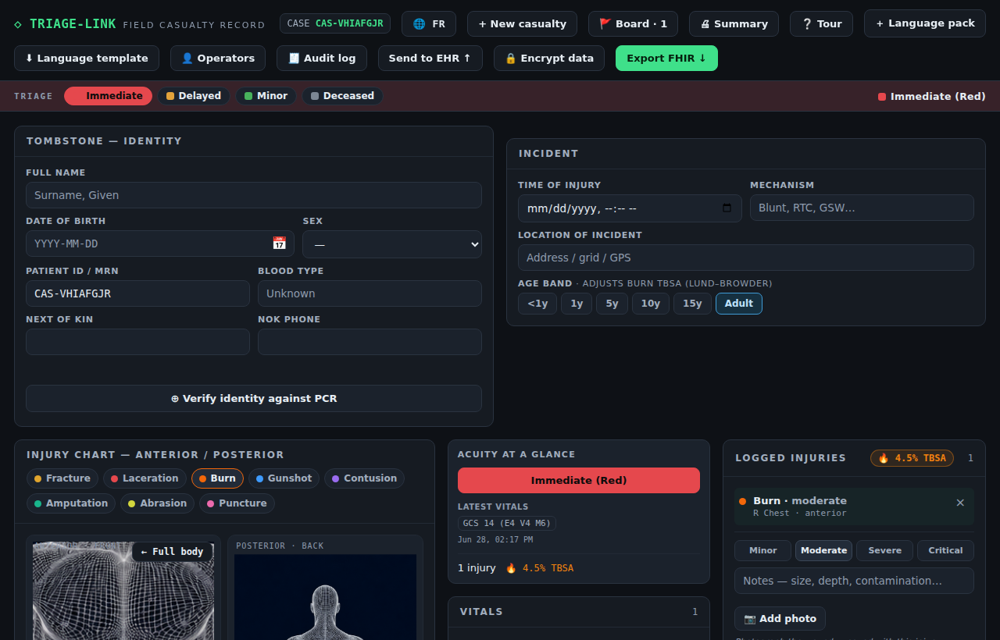
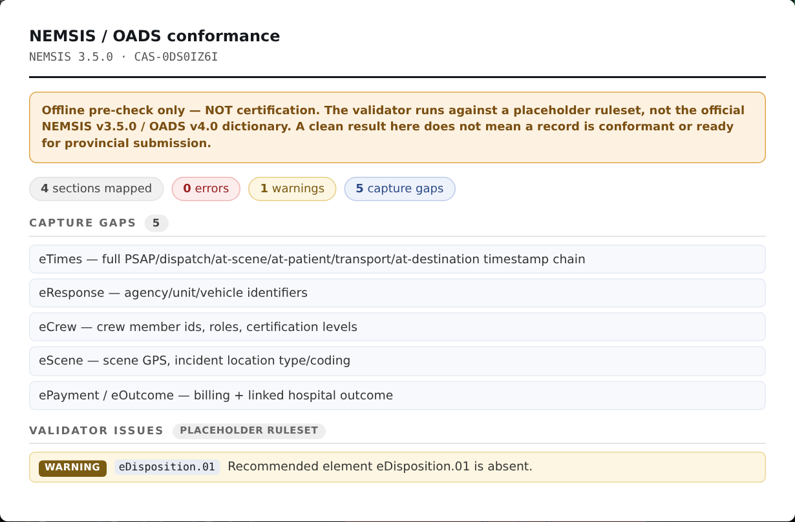
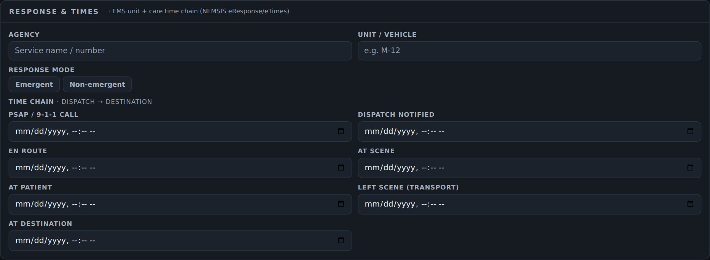

TRIAGE-LINK
Offline-first PWA for field casualty documentation & coordination
Capability overview — the PWA, the encryption & audit layer, the hosted multi-tenant backend with admin security, and the market flavors (Humanitarian / NGO · Ontario EMS / regulated · productized backend).
React + TypeScript · IndexedDB + op-log · WebCrypto · Fastify · NEMSIS/OADS
01
PWA · Screenshot
The field record — one screen, fully offline

Triage tag · patient identity · incident · injury body-chart · acuity glance (GCS, TBSA) · vitals — captured on-device.
05
Flavor · Humanitarian / NGO
Field documentation where the cloud isn't
Shipped on this line
- Deployment context — device-wide operation tag + provenance banner
- Disaster/MCI mode — one toggle makes encryption mandatory + command roll-up
- Kiosk defaults — assign-operator prompt + 2-min auto-lock on shared devices
- Donor export — provenance-stamped CSV + date-range filter
More
- Retention presets — confirmed, step-up-gated purge window (off/30/90/180/365 d)
- Air-gapped packaging — one Docker stack (PWA + sync + Postgres) offline on a laptop
- Loadable language packs for any region; encrypted backups for low-infra handoff
- Intended use = documentation/coordination tool (light reg load)
18
Flavor · Ontario EMS (regulated)
Toward a conformant ePCR
NEMSIS / OADS conformance
- Section exporter maps captured data → NEMSIS v3.5 / OADS v4.0 shapes
- Deterministic offline XML serializer (shaped, gap-annotated)
- Pluggable validator (cardinality/datatype/value-set) + placeholder ruleset
- Capture panels: eResponse / eTimes / eCrew / eScene — gaps clear at runtime
In-app & integration
- Read-only Conformance view: live gaps + validator issues, in 4 languages
- Clearly labelled NOT certification (placeholder ruleset, rulesetSource shown)
- ONE ID / Ontario Health gateway scaffold (mTLS, server-side) for PCR $match
- Gated next: official-dictionary reconciliation + live ONE ID credentials
19
Flavor · Ontario EMS — screenshot
In-app NEMSIS/OADS conformance view

Live capture gaps + offline validator issues for the current record — with a prominent 'offline pre-check, NOT certification' banner and the placeholder-ruleset provenance shown.
20
Flavor · Ontario EMS — capture
eResponse / eTimes capture panel

The 'Response & times' panel: EMS agency / unit / response mode and the dispatch→destination time chain that fill the NEMSIS eResponse + eTimes sections.
21
Flavor · Productized backend
The shared, hardened service line
- The multi-tenant sync service + admin security is the common spine both market branches reuse.
- Multi-tenant isolation, OIDC SSO + role-based admin, per-tenant rate limits & quota, incremental sync.
- EHR-access and admin audit trails — necessary for any regulated, multi-service deployment.
- Cascaded to every flavor branch, so a hardening fix lands everywhere.
22